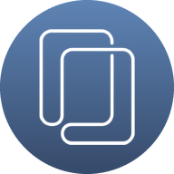
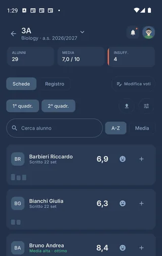
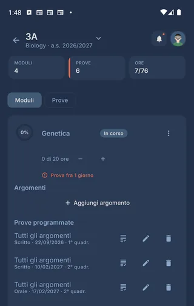
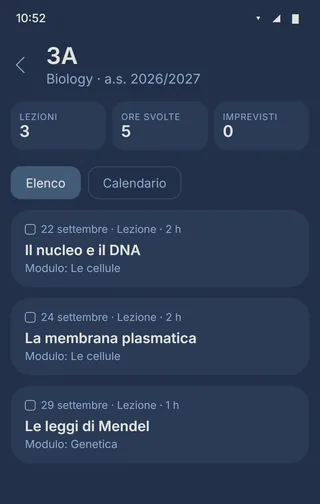
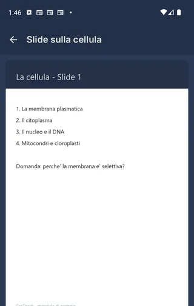

Un progetto di AM Studio

GesTeach
GesTeach è un'app Android per gli insegnanti: la programmazione per moduli e argomenti, il diario delle lezioni, il registro con voti e osservazioni, e l'archivio dei materiali, classe per classe.
I dati didattici restano sul tuo dispositivo e l'app funziona anche senza rete. L'account serve solo ad accedere e, se lo attivi, a un backup nel cloud cifrato che soltanto tu puoi aprire. Nessuna pubblicità, nessun tracciamento.
TODO: stato dell'app e link a Google Play quando c'è.

Le quattro aree
Una classe, quattro sezioni
-

Programmazione
Moduli e argomenti, con le prove programmate dentro ogni modulo. Le ore si aggiornano da sole con le lezioni del diario.
-

Registro lezioni
Ogni lezione con data, durata e modulo, in elenco o sul calendario del mese, insieme alle prove e agli imprevisti.
-
Registro studenti e voti
Voti, medie per quadrimestre e osservazioni, alunno per alunno. Un voto si scrive con due tocchi.
-

Materiali
Slide, verifiche, griglie, video ed esercizi, in una cartella per modulo. PDF e video si aprono dentro l'app.